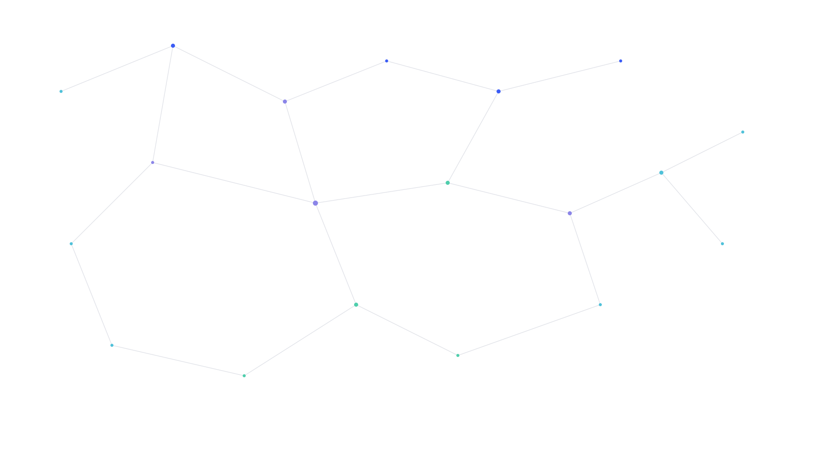

<!DOCTYPE html>
<html lang="en">
<head>
<meta charset="UTF-8">
<meta name="viewport" content="width=device-width, initial-scale=1">
<title>PECANetwork — International network approach to psychopathology</title>
<link rel="stylesheet" href="css/styles.css">
<script src="https://unpkg.com/react@18.3.1/umd/react.development.js" integrity="sha384-hD6/rw4ppMLGNu3tX5cjIb+uRZ7UkRJ6BPkLpg4hAu/6onKUg4lLsHAs9EBPT82L" crossorigin="anonymous"></script>
<script src="https://unpkg.com/react-dom@18.3.1/umd/react-dom.development.js" integrity="sha384-u6aeetuaXnQ38mYT8rp6sbXaQe3NL9t+IBXmnYxwkUI2Hw4bsp2Wvmx4yRQF1uAm" crossorigin="anonymous"></script>
<script src="https://unpkg.com/@babel/standalone@7.29.0/babel.min.js" integrity="sha384-m08KidiNqLdpJqLq95G/LEi8Qvjl/xUYll3QILypMoQ65QorJ9Lvtp2RXYGBFj1y" crossorigin="anonymous"></script>
<script src="js/data.js"></script>
<script src="js/network-hero.js"></script>
<style>
*{box-sizing:border-box}
body{margin:0;background:var(--color-canvas)}
a{color:var(--color-accent-blue-strong)}
a:hover{color:var(--color-accent-blue)}
@keyframes logo-marquee{0%{transform:translateX(0)}100%{transform:translateX(-50%)}}
.logo-track{display:flex;align-items:center;gap:72px;width:max-content;animation:logo-marquee 75s linear infinite}
@media (prefers-reduced-motion: reduce){.logo-track{animation:none}}
</style>
</head>
<body>
<div id="root"></div>
<script type="text/babel" data-presets="react" src="js/components.jsx"></script>
<script type="text/babel">
const { TopNav, Footer, Button, StatBlock, FeatureCard, SectionHeading } = window;
const D = window.SITE_DATA;

function Hero(){
  React.useEffect(()=>{ window.initNetworkHero('hero-canvas'); },[]);
  return (
    <section style={{ position:'relative', overflow:'hidden', background:'var(--gradient-mesh-hero)', padding:'var(--space-section) 32px 96px', textAlign:'center' }}>
      <canvas id="hero-canvas" style={{ position:'absolute', inset:0, width:'100%', height:'100%', display:'block' }}></canvas>
      <div style={{ position:'relative', maxWidth:820, margin:'0 auto' }}>
        <div style={{ display:'inline-flex', alignItems:'center', gap:8, padding:'6px 14px', borderRadius:'var(--radius-pill)', background:'rgba(255,255,255,0.75)', border:'var(--border-hairline)', fontSize:'var(--text-caption-size)', fontWeight:600, color:'var(--color-accent-blue-strong)', marginBottom:24, fontFamily:'var(--font-body)' }}>
          International Research Network
        </div>
        <h1 className="hero-title" style={{ fontFamily:'var(--font-display)', fontSize:'var(--text-display-xl-size)', fontWeight:'var(--text-display-xl-weight)', lineHeight:'var(--text-display-xl-leading)', letterSpacing:'var(--text-display-xl-tracking)', color:'var(--color-ink)', margin:'0 0 20px' }}>
          Mapping the networks<br/>behind psychopathology
        </h1>
        <p style={{ fontFamily:'var(--font-body)', fontSize:'var(--text-title-md-size)', color:'var(--color-body)', lineHeight:1.6, margin:'0 auto 36px', maxWidth:600 }}>
          PECANetwork connects researchers in an effort to better understand the clinical use of the network
          approach to psychopathology.
        </p>
        <div style={{ display:'flex', gap:12, justifyContent:'center', flexWrap:'wrap' }}>
          <Button href="research.html" variant="primary" size="lg">Explore the research</Button>
          <Button href="team.html" variant="secondary" size="lg">Meet the network</Button>
        </div>
      </div>
    </section>
  );
}

function StatsStrip(){
  const institutions = new Set(D.members.map(m => m.institution)).size;
  const countries = new Set(D.members.map(m => m.country)).size;
  const stats = [
    { value: String(D.members.length), label: 'Network members' },
    { value: String(institutions), label: 'Member institutions' },
    { value: String(countries), label: 'Countries' },
    { value: D.founded, label: 'Network founded' },
  ];
  return (
    <section style={{ background:'var(--color-canvas)', padding:'48px 32px', borderTop:'var(--border-hairline)', borderBottom:'var(--border-hairline)' }}>
      <div className="stats-grid" style={{ maxWidth:'var(--container-max)', margin:'0 auto', display:'grid', gridTemplateColumns:'repeat(4, 1fr)', gap:24, justifyItems:'center' }}>
        {stats.map(s => <StatBlock key={s.label} {...s} />)}
      </div>
    </section>
  );
}

function LogoMarquee(){
  const base = D.logos || [];
  if(!base.length) return null;
  const REPEAT = Math.max(6, Math.ceil(24 / base.length));
  const block = Array.from({ length: REPEAT }, () => base).flat();
  const track = [...block, ...block];
  return (
    <section style={{ background:'#fff', padding:'32px 0', overflow:'hidden' }}>
      <div className="logo-track">
        {track.map((l, i) => (
          
        ))}
      </div>
    </section>
  );
}

function ApproachTeaser(){
  const items = [
    { title: 'Breaking through diagnostic categories', description: 'Symptoms, not diagnostic labels, take center stage — disorders are understood as networks of interacting complaints.', accent:'blue' },
    { title: 'Translating theory into clinical use', description: 'Psychoeducation makes network theory graspable and usable, helping clinicians and patients apply it in everyday practice.', accent:'violet' },
    { title: 'Including patient perspectives', description: 'Perceived causal network generation gives patients a voice in how their own symptom network is mapped, alongside data-driven methods.', accent:'mint' },
  ];
  return (
    <section style={{ padding:'var(--space-section) 32px', background:'var(--color-canvas)' }}>
      <div style={{ maxWidth:'var(--container-max)', margin:'0 auto' }}>
        <SectionHeading eyebrow="The network approach" title="Why this matters for clinical practice" />
        <div className="pillars-grid" style={{ display:'grid', gridTemplateColumns:'repeat(3, 1fr)', gap:20, marginTop:48 }}>
          {items.map(it => <FeatureCard key={it.title} {...it} />)}
        </div>
      </div>
    </section>
  );
}

function CTABand(){
  const countries = new Set(D.members.map(m => m.country)).size;
  return (
    <section style={{ padding:'0 32px var(--space-section)' }}>
      <div style={{ maxWidth:'var(--container-max)', margin:'0 auto', borderRadius:'var(--radius-xl)', background:'var(--gradient-mesh-hero)', padding:'72px 48px', textAlign:'center', position:'relative', overflow:'hidden' }}>
        
        <div style={{ position:'relative' }}>
          <h2 style={{ fontFamily:'var(--font-display)', fontSize:'var(--text-display-md-size)', fontWeight:'var(--text-display-md-weight)', letterSpacing:'var(--text-display-md-tracking)', color:'var(--color-ink)', margin:'0 0 32px' }}>
            Researchers across {countries} countries
          </h2>
          <Button href="team.html" variant="primary" size="lg">View the network</Button>
        </div>
      </div>
    </section>
  );
}

function App(){
  return (
    <React.Fragment>
      <TopNav active="index.html" />
      <Hero />
      <StatsStrip />
      <LogoMarquee />
      <ApproachTeaser />
      <CTABand />
      <Footer />
    </React.Fragment>
  );
}
ReactDOM.createRoot(document.getElementById('root')).render(<App />);
</script>
</body>
</html>
